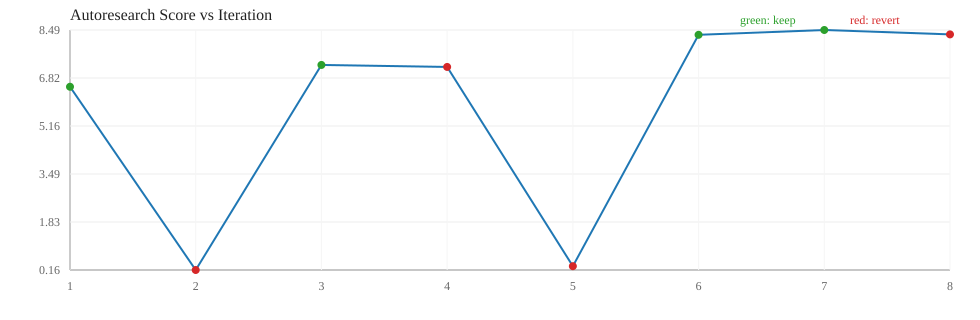

| ts | iter | bucket | proposal | decision | score | lat(ms) | gflops | reason | log messages |
|---|---|---|---|---|---|---|---|---|---|
| 2026-03-19T18:26:28 | 1 | medium | agent_heuristic | keep | 6.5176 | 1.6973 | 43.0680 | score_improved | iter=1 bucket=medium proposal=agent_heuristic candidate=blocked_pack|96|96|96|True|True|True|16|2|f16|f16 decision=keep score=6.517634 reason=score_improved note=heuristic_after_openai_fail |
| 2026-03-19T18:26:29 | 2 | medium | agent_heuristic | revert | 0.1596 | 83.9668 | 1.2709 | improvement_below_threshold | iter=2 bucket=medium proposal=agent_heuristic candidate=naive|0|0|0|False|False|False|1|1|f16|f16 decision=revert score=0.159607 reason=improvement_below_threshold note=heuristic_after_openai_fail |
| 2026-03-19T18:26:29 | 3 | medium | agent_heuristic | keep | 7.2745 | 1.5342 | 48.5666 | score_improved | iter=3 bucket=medium proposal=agent_heuristic candidate=blocked_pack|80|96|128|True|True|True|16|2|f16|f16 decision=keep score=7.274471 reason=score_improved note=heuristic_after_openai_fail |
| 2026-03-19T18:26:29 | 4 | medium | agent_heuristic | revert | 7.2053 | 1.5479 | 48.0673 | improvement_below_threshold | iter=4 bucket=medium proposal=agent_heuristic candidate=blocked_pack|80|96|128|True|True|True|16|1|f16|f16 decision=revert score=7.205338 reason=improvement_below_threshold note=heuristic_after_openai_fail |
| 2026-03-19T18:26:30 | 5 | medium | agent_heuristic | revert | 0.2920 | 44.7952 | 2.2797 | improvement_below_threshold | iter=5 bucket=medium proposal=agent_heuristic candidate=blocked|64|64|96|False|False|True|1|2|f16|f16 decision=revert score=0.292038 reason=improvement_below_threshold note=heuristic_after_openai_fail |
| 2026-03-19T18:26:30 | 6 | medium | agent_heuristic | keep | 8.3199 | 1.3510 | 55.9971 | score_improved | iter=6 bucket=medium proposal=agent_heuristic candidate=blocked_pack|80|112|128|False|False|False|16|1|f16|f16 decision=keep score=8.319947 reason=score_improved note=heuristic_after_openai_fail |
| 2026-03-19T18:26:30 | 7 | medium | agent_heuristic | keep | 8.4869 | 1.3580 | 58.7259 | score_improved | iter=7 bucket=medium proposal=agent_heuristic candidate=blocked_pack|64|80|160|False|False|False|16|1|f16|f16 decision=keep score=8.486916 reason=score_improved note=heuristic_after_openai_fail |
| 2026-03-19T18:26:31 | 8 | medium | agent_heuristic | revert | 8.3346 | 1.3739 | 57.2714 | improvement_below_threshold | iter=8 bucket=medium proposal=agent_heuristic candidate=blocked_pack|48|80|128|True|True|False|16|2|f16|f16 decision=revert score=8.334587 reason=improvement_below_threshold note=heuristic_after_openai_fail |